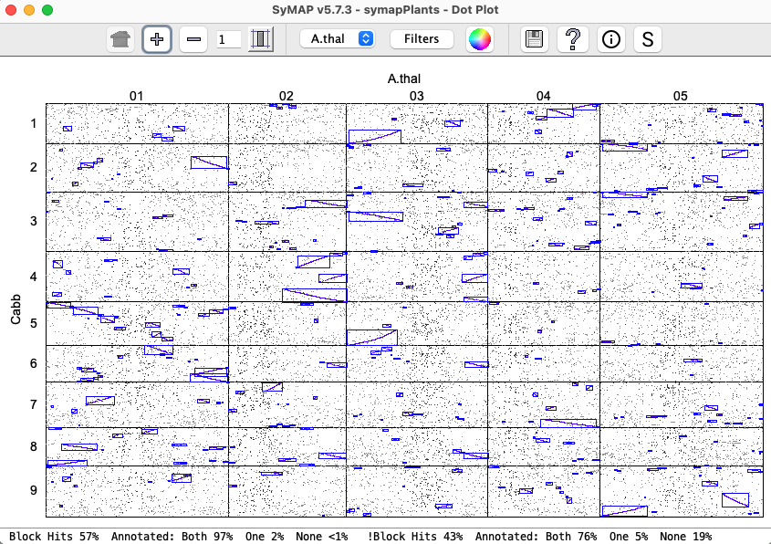
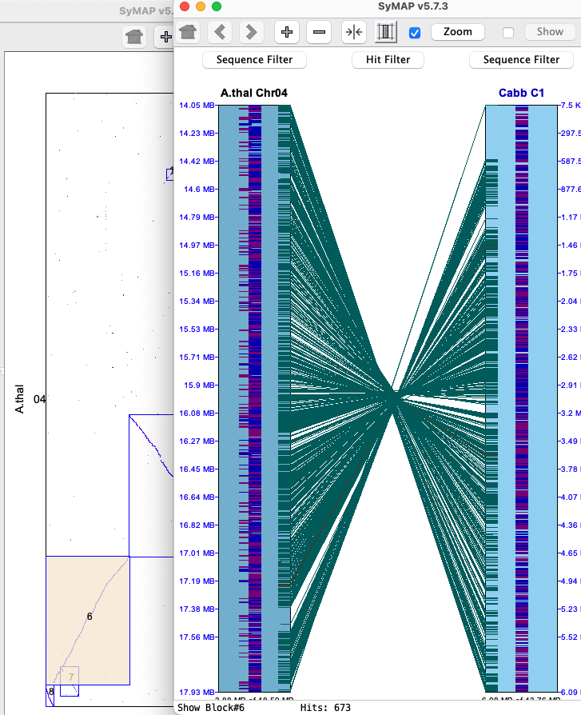
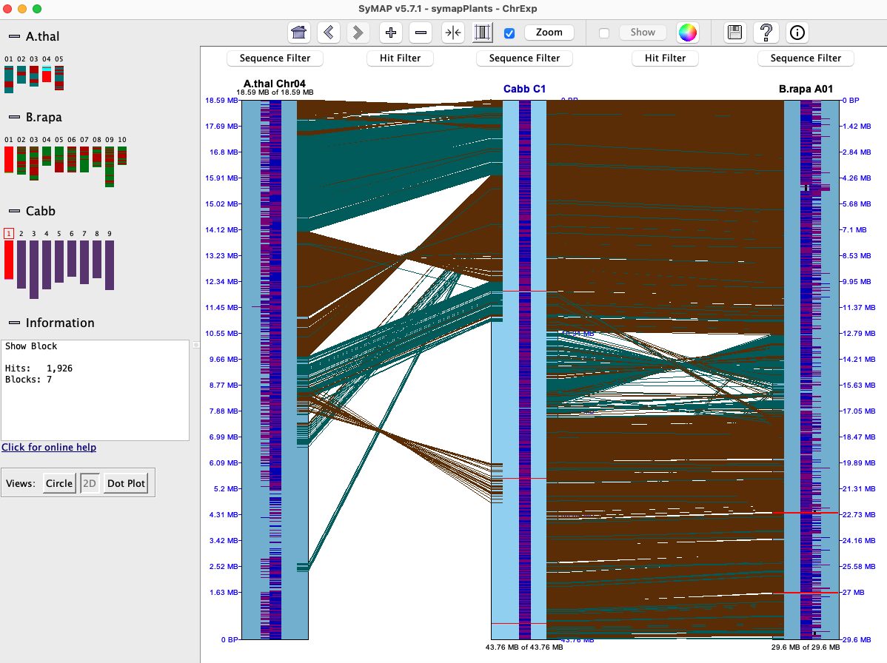

|
|
SyMAP User Guide |


|
|
|
|||
- Most of the contents also apply to the FPC-to-Seq view. For specific information see FPC specific.
- For detailed information on installation, see the System Guide.
- For a quick visual introduction, see the Tour.
- Please send bug reports and suggestions to symap@agcol.arizona.edu.
Contents
The Dot Plot and Circle displays are available from various places.- Main Display
- Displays for Selected Pair (Two-Genome Views)
- Displays for All Projects (Multi-Genome Views)
- Self-synteny Displays
- Data Download
- Print and Help
Citations
The SyMAP User Agreement requires you cite one of the following articles if you use SyMAP in a paper, poster, or presentation.C. Soderlund, M. Bomhoff, and W. Nelson (2010) SyMAP: A turnkey synteny system with application to plant genomes. Nucleic Acids Res 39(10):e68. Link
C. Soderlund, W. Nelson, A. Shoemaker and A. Paterson (2006) SyMAP: A System for Discovering and Viewing Syntenic Regions of FPC maps Genome Research 16:1159-1168. Link
Also cite the MUMmer publication: Marcais et al. 2018 or Kurtz et al. 2004.
Main display | Go to top |
The display in the image on the right is shown when the following is executed from the terminal:
./viewSymapIs it also available from ./symap, which will also have the alignment commands.
|
All projects in the database will be listed on the left panel. The date beside the project name
is when it was loaded. If a [n] follows the date, it is part of n computed syntenies.
Selecting projects on the left panel shows them on the right panel.
A check mark in the By selecting a cell with synteny, the | 
|
Displays for Selected Pair
The buttons beside this label are "whole genome" displays for the selected pair (highlighted yellow).
Circle Display #1 (Two Genome) | Go to top |
|
The circle display shows the chromosomes arranged in a circle,
with synteny blocks shown as colored ribbons between the chromosomes.
The color of a ribbon comes from one of the two chromosomes it connects; for example,
in the image on the right, the Cabbage Chr1 is red and the corresponding ribbon is red.
Clicking on a species names causes its colors to be used preferentially (sometimes it is necessary to click at the very beginning or end of the name for this to work). Clicking on a chromosome (e.g. the red part of the circle for Cabbage Chr1) causes ribbons from that chromosome to be shown on top. Control PanelReferring to top of the display, the first two buttons (+, -) change the size, while the third rotates the image.
|

|
Dot Plot #1 (Two Genome) | Go to top |
|
Dots represent anchors (also referred to as hits). A blue box indicates a
Synteny Block. A chromosome pair is represented by a cell.
Clicking a cell will replace the whole genome view with the dotplot for the chromosome pair. Within the cell dotplot:
|  |
Control Panel | Go to top |
Dotplot Filters | Go to top |
|
The Filter image on the right indicates the default settings.
| 
|
Blocks Display (Two Genome) | Go to top |

| Clicking a chromosome pops up a window of the chromosome as shown below. Clicking
a block pops up a 2D view.
|

Summary (Two Genome) | Go to top |

Displays for All Projects
From the main SyMAP display, select two or more projects, which will activate the "Chromosome Explorer" and "Dotplot" buttons.
Chromosome Explorer | Go to top |

Left panel: The left panel controls which species and chromosomes are shown:
- Click a chromosome rectangle to add it to the display in the right panel. Click it again to remove it.
- Click the chromosome number above a chromosome to make it the reference. (The choice of reference sequence does not matter for the circle view, but it is important for the 2D and Dot Plot views; see below).
- Adding and removing chromosomes affects the Circle view instantly. To add/remove from the 2D or Dot Plot views, open the Circle view, make the change, and then re-open the 2D or Dot Plot.
Click the minus (
Right panel: The right panel shows the synteny display for the species and chromosomes selected on the left. The three view for the right panel are Circ, 2D and Dotplot. The first two views are essentially overviews, while the 2D view allows zooming in to details, all the way to the basepair level if desired. Each right-panel display format has its own controls; see the individual sections for details.
Circle Display #2 (Multi-chromosome) | Go to top |
Dot Plot #2 (Multi-chromosome)
All features are described in the first dot plot section, except that it is chromosome-based instead of genome-based. Selecting a chromosome pair (cell) from the image on the left will replace it with the dotplot for the cell on the right. Clicking on a synteny block (or selected region) brings up the 2D view shown furthest right below.

|  |
2D Display (Multi-chromosome) | Go to top |
| Contents: | View a region | Control Panel | Sequence Filter | Hit Filter |
The 2D display is activated from the Explorer by
clicking the
|
On the right is an image depicting an alignment from A.thal Chr4 to Cabbage Chr1 to B.rapa Chr2.
Note that Cabbage Chr1 is the reference
chromosome, hence is placed in between the others.
Each chromosome is drawn as a light-blue rectangle, called tracks. The sequence length is shown at the bottom of a track; the coordinates are displayed on the side. The gene annotations (if exists) are drawn down the middle of the rectangle in dark-blue. The synteny hits are the brown lines between tracks. The colors can be changed using the Color Icon in the upper right. Right click in the sequence track will cause a popup of the most commonly used filters and features (e.g. flipping the region). They are also on the filter menu above each track (see Sequence Filter). |  |
View a region | Go to top |
|
Genes: The black lines with heavier blue bars interspersed down the center indicate exon/intron
predictions. A solid black line would indicate the absence of introns in the annotation.
Hits: The alternating brown/gray lines indicate anchor hit clusters; e.g. the lower gene shown on the right has 16 separate MUMmer hits that are clustered together to represent one hit (#269294). The solid brown lines indicate a single hit (or multiple hits very close together), while the gray lines are spaces with no alignment. Ruler: The ruler on the right side of the sequence rectangle shows the relative BP position along the sequence. |

|
|
Hovering the mouse over a hit or gene will show its information in the | 
|
| Right clicking on a yellow annotation box results in a popup, as shown on the far right. Besides the gene information, it also shows the list of exons. It is useful for copying all or part of the description, and viewing the information when the box is partially hidden. | 
|
Annotation data of the following types may be loaded into SyMAP and displayed.
| Annotation Type | Display |
| Gaps | Red band across the chromosome |
| Centromere | Blue "X" across the chromosome |
| Predicted genes and exons | Annotation strip in center of chromosome, as described above. |
Control Panel and Navigation | Go to top |

| Zoom All Tracks | Zoom the track to the selected region and all other tracks with hits in the region. |
| Zoom Selected Track | Zoom to the selected region on the selected track; all other tracks do not change. |
| Align (Max 30000) | Open the base alignment view for the selected region (see Base View). No more than 30000 bases can be selected. There MUST be hits in the region to align. |
| Show Sequence | The selected sequence will be shown in a popup, which can be copied. This has limited utility, but is the only way to view the entire underlying sequence (the align view shows the bases of hit regions only). |
Additional navigation:
| Resize Track | Drag bottom of track | Position mouse at bottom of track (resize cursor appears), hold down left mouse button, and move mouse. |
| Scroll Track | Mouse wheel | Position mouse over track and use mouse wheel. |
| Filter | Right mouse button | Position mouse over track or white space between tracks, and click right mouse button. |
Sequence Filter
Select
|
|

|
| A subset of the filters are available by right clicking in the light blue area of the chromosome rectangle. |

|
Hit Filter | Go to top |
|
|

|
Align (Base View) |
Go to top |

The aligned base view of the hits will appears in a new window. This view consists of a ruler along the top showing the area of the sequence covered, the hits, and the genes.
Hits
Hits are displayed as lines with an arrow on one end showing the direction of the hit;
a hit may represent multiple MUMmer hits, and is further broken into sub-hits where there are indels.
A vertical red line along a represents a mismatch.
Clicking on a sub-hit line brings up the its base alignment view in the bottom of the dialog.
Genes
Annotated genes are displayed below the hits. Exons are represented by a blue box, and
the leftmost or rightmost exon box will have an arrow tip indicating whether the gene
is on the + strand (right-pointing) or - strand (left-pointing) relative to the
sequence. The system attempts to expand the view to show the full gene that has
hits. Genes that overlap this gene will be partially shown.
Dot Plot #3 (Multi-genome) | Go to top |

{kind=link}
{kind=link}
{kind=link}
{kind=link}
SyMAP Queries | Go to top |
To open the query interface, first select two or more sequence projects in the Project Manager.
Then select the

The Overview window (above) lists the projects which were selected for querying. To set up a query, open the

Set up the query and then select
Return only hits which are part of a pair of N aligning genes having no intervening
non-aligning genes. There is a column called "RunSize" that provides the number
of adjacent aligning genes. Note that this is not the same as synteny blocks, which
allows intervening non-aligning genes.
Using the hits that pass the hit filters, SyMAP constructs putative gene families (PgeneFs)
spanning the selected species. This is done by grouping hits whose hit regions overlap on
at least one genome. Note, if you have more than 6 species selected, this stage can take
an hour or more.
Each PgeneF is given a number, which is shown in the Query Results table (column name "PgeneF"). The size of the PgeneF is also shown (column "PgFSize").
SyMAP Query Result Table
When the query is complete, the Query Results page opens showing the table of results:

The table contains all the hits (anchors) resulting from the query. Each hit connects two species and you can see the respective chromosomes and start/end locations of the hits, as well as gene annotations overlapped by the hits.
Note that the table contains columns for all of the selected species, but each hit only connects two species, and the other species columns are empty. If the query specified orphan genes, then each row represents one gene and shows data only for one species.
The columns can be sorted by clicking on the column name, and rearrange them by dragging the header boxes.
Button functions
Results Table Columns
You can add/remove columns using the
Self-synteny Display | Go to top |
The
Data Download
There are two ways to download data for SyMAP synteny blocks, individual hit anchors, and annotations:- Through the Explorer. Select the species of interest, open the Explorer, and the download button is at the lower left. This exports a table of all the computed synteny block coordinates for all the selected species, including their self-alignments, if those were computed.
- Through the SyMAP Queries. For example, choosing two species and executing a query with the default parameters will show a table of all the hits found between the two species, plus their annotations and synteny block membership, if any.
Print and Help | Go to top |
 set of icons.
set of icons.
The left icon is for printing the image. However, this does not work with all versions of Java. If it does not work, use the system "Screen Capture" (all the images in this document were created with screen capture, along with the images in the SyMAP publications).
The right icon brings up this web page, typically to the correct section (obviously, there needs to be an internet connection).
3D Display (if available) | Go to top |